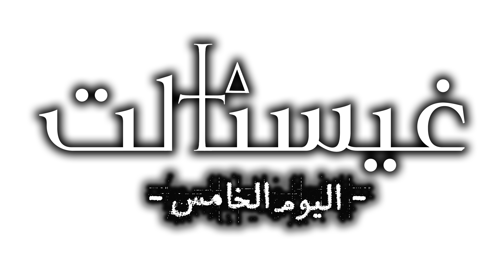

اليوم الأول
أول ليلة في البيت. استكشف الغرف، واكتشف أن بعض الأشياء هناك تستكشفك أيضًا.
- الغرف
- الجزار
- التلفاز
تحذير
هذه اللعبة غير مناسبة للأطفال أو لمن يتأثرون بسهولة.
يرجى الاطلاع على قائمة «التحذيرات» للاطلاع على القائمة الكاملة للتحذيرات الموجودة في هذه اللعبة.
يُنصح اللاعبون بتوخي الحذر.

لا يمكنكِ تسمية الأشياء التي تعيش هنا 'أشباحاً'…
مهما كانت... إنها أقدم بكثير من الأشباح.
لعبة رعب نفسي من تطوير KinjaKo — موقع تعريفي عربي غير رسمي
MY NAME IS WICKE
اسمي ويكينا غيستالت.
و... أنا أعيش في منزل مسكون.
لقد ورثته من تلك العجوز المجنونة التي كانت تعيش في مسقط رأسي. وحتى يومنا هذا، لا أعرف لماذا تركت لي منزلها في وصيتها.
لم نكن أقارب. ولم نتحدث مع بعضنا البعض قط.
لأكون صادقة، لقد أرعبتني بشدة عندما كنت طفلة.
لا أعرف لماذا قبلت العرض لأخذه منها. على ما أعتقد أن المنزل المجاني هو منزل مجاني.
حتى لو كان منزلاً مكتظاً بالأشباح.
لا... أعتقد أن هذا ليس صحيحاً تماماً.
لا يمكنكِ تسمية الأشياء التي تعيش هنا 'أشباحاً'.
...إنها أقدم بكثير من الأشباح.
FIVE DAYS
خمسة أيام في البيت. كل يومٍ له سيناريوهاته، وكل سيناريو له نهايتان: واحدة تُرضي البيت، وأخرى تُغضبه.
أول ليلة في البيت. استكشف الغرف، واكتشف أن بعض الأشياء هناك تستكشفك أيضًا.
حركة خلف الجدران، بثٌّ قديم يعرف اسمك، وأمٌّ في القبو لا تحب أن تنتظر.
إيما تزور البيت. حفل استحضار الأرواح يتّجه إلى مكانه الخطأ، بالوعةٌ تتنفّس، ونباتاتٌ في الفناء جائعة.
تدريبٌ على عيش حياةٍ طبيعية، قفلٌ يُفتح بالأرقام الصحيحة فقط، وطقسٌ أخير في القبو.
البومُ رحلت. اليوم هو اليوم. لا يتبقّى سوى ملاكٍ واحد واختيارٍ واحد.
WHO LIVES HERE
موظفة مكتبٍ منهكة ورثت بيتًا لم تطلبه. تحاول الإصلاح، والتنظيف، والنجاة. ليلةً بعد ليلة.
صديقة ويكي. تحمل سكاكين أكثر مما يحتاج أي إنسان، وتزور البيت في أسوأ الأوقات الممكنة.
شيءٌ يسكن البيت ويتوقّ إلى ما لديك. لا تتركه يدخل رأسك، ولا مطبخك.
في القبو، هناك أمٌّ تنتظر أطفالها. لا تجعلها تنتظر طويلًا.
بثٌّ يعرف اسمك ويعرف بيتك. استمع جيدًا: هل يحذّرك… أم يستدعيك؟
يحمل اسمًا من أربعة مقاطع وصوتًا يوحي أن كل شيء سيكون على ما يرام. قد يكون مخادعًا. قد يكون صادقًا.
ACHIEVEMENTS
خمس نهايات، كما في لوحة الإنجازات داخل اللعبة. مرّر المؤشّر — أو ركّز باللوحة المفاتيح — لكشف وصف كل واحدة.
AN INEVITABLE END
؟؟؟ أحصل على النهاية الأولى.
THIS IS MY HOME
؟؟؟ أحصل على النهاية الثانية.
SERVANT NO MORE
؟؟؟ أحصل على النهاية الثالثة.
THE FOURTH DAY
؟؟؟ أحصل على النهاية الرابعة.
BOZOS WASTED!
؟؟؟ أحصل على النهاية الخامسة.
«من الصعب أن تكوني على قيد الحياة!»
«لقد كنتِ تحاولين أفضل ما لديك على الإطلاق!»
«لا تتوقفي أبدًا عن المحاولة»
«لا شيء لا مفر منه. هناك دائما طريقة.»
«ويكي… سوف نلتقي مرة أخرى»
TRIGGERS
هذه اللعبة غير مناسبة للأطفال أو لمن يُصاب بالانزعاج بسهولة بسبب ما يلي:
نتمنى أن تقدّر ذلك وتتوخّى الحذر.
التعريب · LOCALIZATION
حالة التعريب: قيد العمل — سيُتاح ملف التعريب هنا فور اكتماله.
Gestalt: The Fifth Day AR.zipزرّ التنزيل غير فعّال الآن — سيُنشَّط تلقائيًا عند وضع ملف translation.rpy في مجلد assets/ مع تحديث رابط الزر.
CREDITS
تطوير اللعبة: KinjaKo
اللعبة على ستيم: Steam Store
التعريب: @B_L_M3
عن هذا الموقع: موقع تعريفي غير رسمي من صنع المعجبين، بُني بعد قراءة ملفات اللعبة نفسها — نصوصها وخطوطها وصورها — ليعكس أجواءها وأسلوبها.